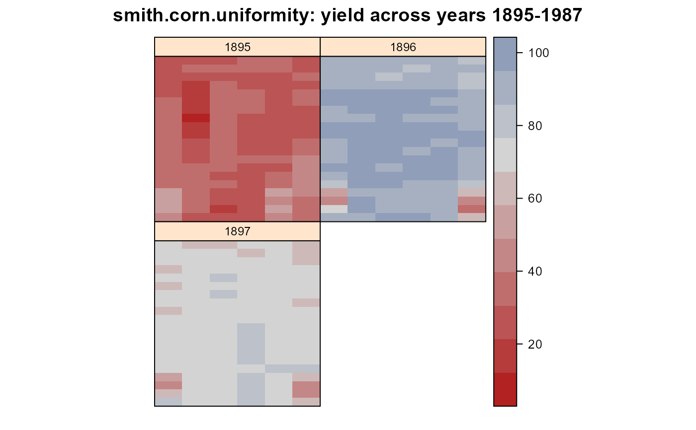

smith.corn.uniformity.RdUniformity trial of corn, 3 years on same ground, 1895-1897, in Illinois.
A data frame with 360 observations on the following 5 variables.
rowrow
colcolumn
plotplot number, consistent across years
yearyear. Last two digits of 1895, 1896, 1897
yieldyield, bushels / acre
Data come from the Illinois Experiment Station.
The data values are from Smith (1910) and the field map is from Harris (1920). Each plot was 1/10 acre, but the dimensions are not given. Note that 1/10 acre is also the area of a square 1 chain (66 feet) on a side.
The following text is abridged from Smith (1910).
How much variability may we reasonably expect in land that is apparently uniform? Some data among the records of the soil plots at the Illinois Experiment station furnish interesting material for study in this connection.
A field that had lain sixteen years in pasture was broken up in 1895 and laid out into plots to be subsequently used for soil experiments. The land is slightly rolling but otherwise quite uniform in appearance. There are in the series to be considered in this connection 120 one-tenth acre plots. These plots were all planted to corn for three consecutive years without any soil treatment, so that the records offer a rather exceptional opportunity for a study of this kind.
The yields of all these plots in terms of bushels of shelled corn per acre for the three years are given in the accompanying table.
A study of this data reveals some very striking variations. It will be noticed in the first place that there is a tremendous difference in production in the different years. The first year, 1895, was an extremely unfavorable one for corn and the yields are exceptionally low. The weather records show that the season was not only unusually dry, but also cool in the early part. The following year we have an exceptionally favorable corn season, and the yields run unusually high. The third year was also a good one, and the yields are perhaps somewhat above the normal for this locality.
It will be observed that certain plots appear to be very abnormal. Thus plots 117, 118, 119, and 120 give an abnormally high yield in the first season and an abnormally low one in the two following years. This is to be accounted for in the topography of the land. These plots lie in a low spot which was favorable in the dry year of 1895, but unfavorable in 1896 and 1897. For this reason these four plots were rejected from further consideration in this study, as were also plots 616, 617, 618, 619, and 620. This leaves 111 plots whose variations are apparently unaccounted for and which furnish the data from which the following results are taken.
It is noticeable that the variability as measured by the standard deviation becomes less in each succeeding year. This suggests the question as to whether continued cropping might not tend to induce uniformity. The records of a few of these plots which were continued in corn for three years longer, however, do not support such a conclusion.
It seems reasonable to expect greater variability in seasons very unfavorable for production, such as that of 1895, because so much may depend upon certain critical factors of production coming into play and this suggestion may be the explanation of the high standard deviation in this first year. Results extending over a longer series of years would be extremely interesting in this connection.
If we consider the total range of variation in any single year, we find differences as follows: Plots lying adjoining have shown the following maximum variations: 18 bushels in 1895; 11 bushels in 1896; 8 bushels in 1897.
The above results give us a conception of the unaccountable plot variations which we have to deal with in field tests. The possibility remains that a still closer study might detect some abnormal factors at play to account for these variations in certain cases, but the study certainly suggests the importance of conservatism in arriving at conclusions based upon plot tests.
The particular value that the writer has derived from this study is the strengthening of his conviction that the only dependence to be placed upon variety tests and other field experiments is from records involving the average of liberal numbers and extending over long periods of time.
Smith, L.H. 1910. Plot arrangement for variety experiments with corn. Agronomy Journal, 1, 84--89. Table 1. http://books.google.com/books?id=mQT0AAAAMAAJ&pg=PA84
Harris, J.A. 1920. Practical universality of field heterogeneity as a factor influencing plot yields. Journal of Agricultural Research, 19, 279--314. Page 296-297. http://books.google.com/books?id=jyEXAAAAYAAJ&pg=PA279
library(agridat) data(smith.corn.uniformity) dat <- smith.corn.uniformity dat = transform(dat, year=factor(year)) libs(desplot) desplot(yield~col*row|year, dat, layout=c(2,2), aspect=1, main="smith.corn.uniformity: yield across years 1895-1987")## # Outliers are obvious ## libs(lattice) ## xyplot(yield~row|factor(col), dat, groups=year, ## auto.key=list(columns=3), main="smith.corn.uniformity") libs(rgl) # A few odd pairs of outliers in column 6 # black/gray dots very close to each other plot3d(dat$col, dat$row, dat$yield, col=dat$year, xlab="col",ylab="row",zlab="yield") rgl.close()